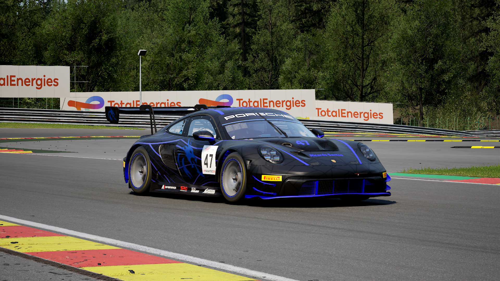
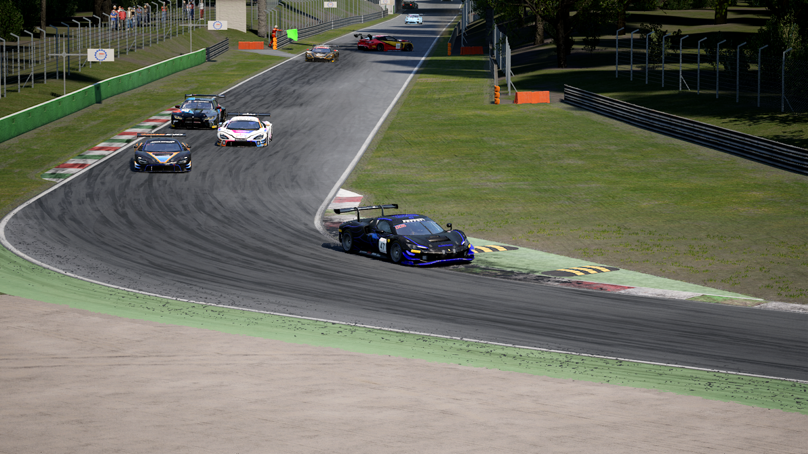
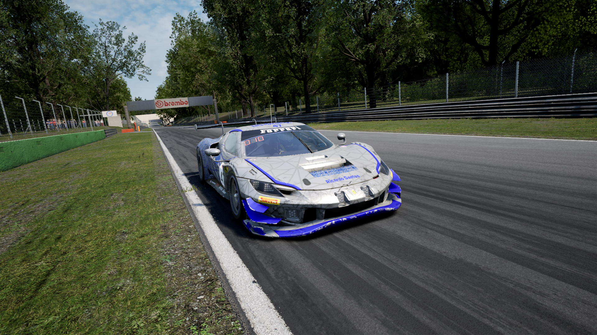
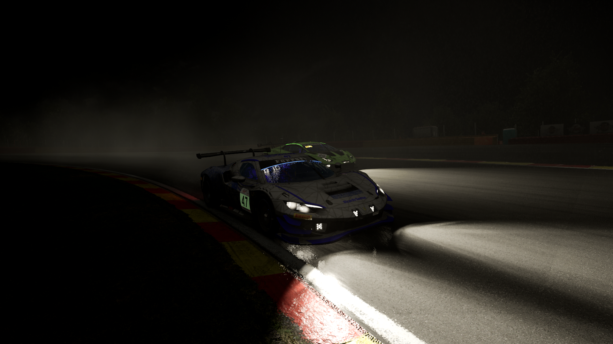
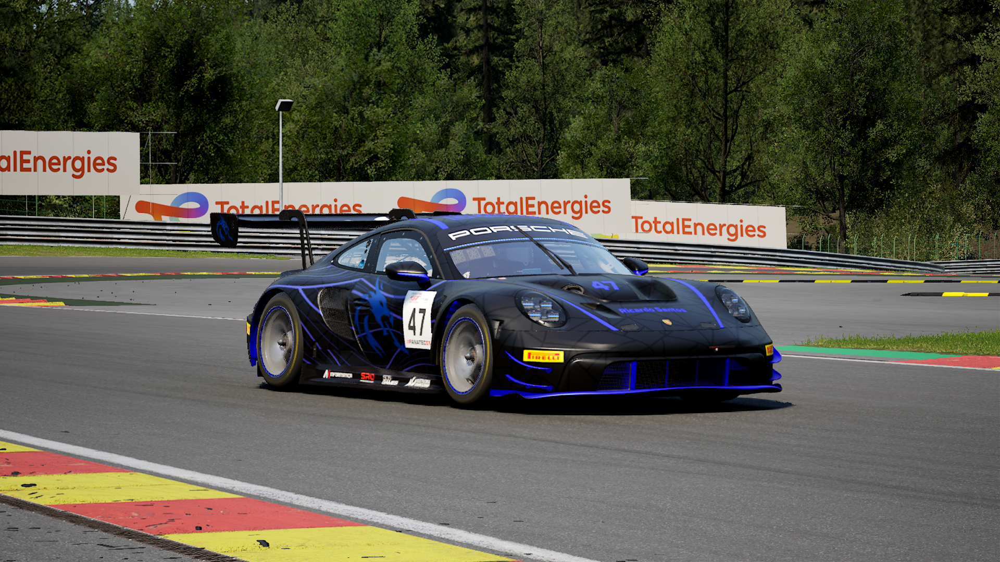
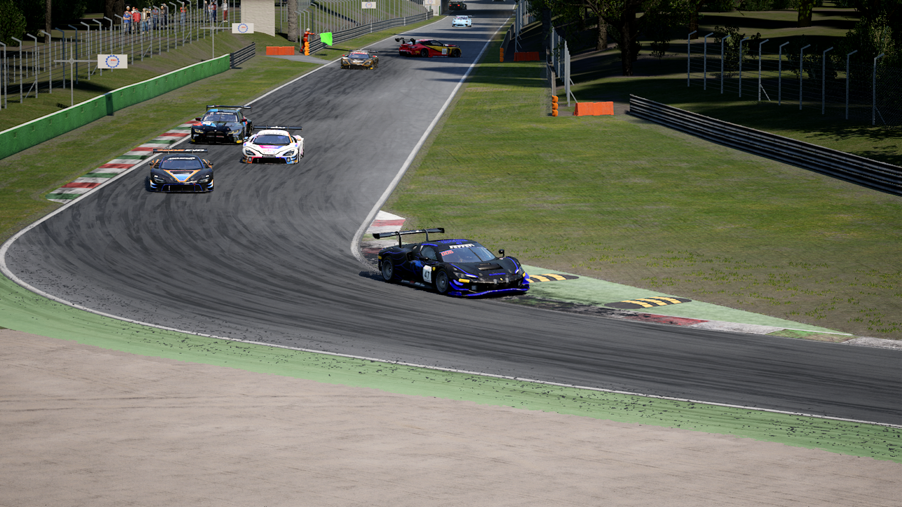
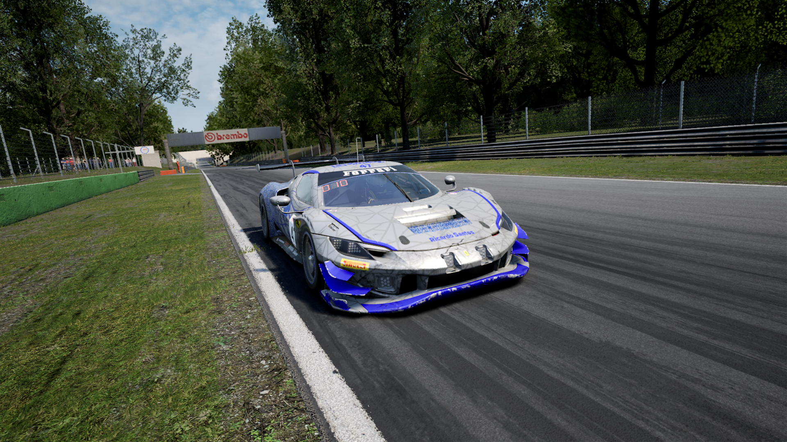
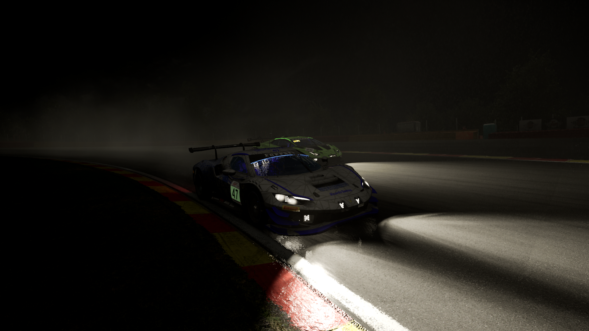

SimRacer Português
Assetto Corsa Competizione • Número #47
Sobre Mim
O meu nome é Ricardo Santos, tenho 17 anos e sou natural do Porto, Portugal.
Os meus carros principais no Assetto Corsa Competizione são o Porsche 992 GT3 R e o Ferrari 296 GT3. Desde o início que utilizei o 991 II GT3 R — mesmo sendo um dos carros mais exigentes, habituei-me ao seu comportamento. Mais recentemente, comecei também a utilizar o Ferrari 296, e gosto bastante do seu equilíbrio e estilo de condução.
Tenho um estilo de condução agressivo nos inícios das corridas, mas mantenho a calma e consistência ao longo do resto da prova.
O meu circuito favorito é Monza, um verdadeiro templo da velocidade que me desafia constantemente a atingir os limites do meu carro. Cada volta é uma oportunidade de afinar o meu controlo nas zonas de travagem e de melhorar as minhas entradas em curva. É também onde treino os meus corners, explorando a precisão e a agressividade necessárias para ganhar tempo sem comprometer a estabilidade. Com o tempo, fui-me tornando cada vez mais consistente neste traçado icónico.
Apesar de Monza ser o meu preferido, a verdade é que adoro correr em qualquer circuito — desde a técnica de Valência, à exigência de Spa-Francorchamps, ou à fluidez de Silverstone. Cada pista oferece um novo desafio e uma nova oportunidade de evoluir enquanto piloto.
Além de correr, sou o criador da minha própria livery - esta consiste em duas cores: azul e preto. Escolhi o azul, não só por ser a minha cor favorita, mas também por simbolizar o sítio onde nasci: o Distrito do Porto. O preto simboliza o meu estilo agressivo. Quando bem observado, dá para notar um dragão azul do lado direito dos carros, que também simboliza o Distrito do Porto.
Infelizmente, não tenho volante nem pedais, então utilizo o rato como volante. Isto limita a minha performance, mas, com 70h de jogo (em 5 de agosto de 2025), considero-me um piloto interessante, tendo em conta as limitações.
Estou totalmente disponível para integrar uma comunidade de SimRacing ou até uma equipa — por mais pequena ou recente que seja. Estou pronto para evoluir e competir.
Rating
Pontução Total
7687
Categoria FIA
Bronze
Horas de Jogo Totais
101
Galeria
 







Contacto
Podes contactar-me por e-mail: ricardodms08@gmail.com
Ou através do Discord: rickyhex